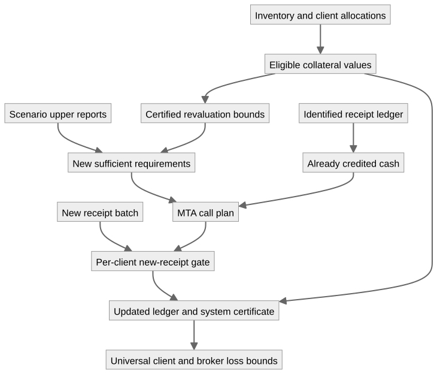

On this page
Broker margin machinery and correctness
This is a progression of eight generic, checked margin systems. Each stage adds a financial or operational feature and proves the guarantee that survives it. There are no market scenarios, sample portfolios, calibrated haircuts, or numerical regulatory limits in this folder. The inputs are arbitrary client netting sets, Cauchy-real claim and collateral profiles, and explicit model certificates.
The final controller connects valuation, collateral allocation, calls, and receipt processing. If newly credited receipts meet each client's computed request, then at every admissible state:
positive unsecured claim of client i ≤ minimum transfer tolerance i
sum of client unsecured claims ≤ sum of those tolerances
modeled closeout loss ≤ sum of those tolerancesThe loss inequality holds for every supplied
default/recovery severity in [0,1], independently for every
client and state. With zero transfer tolerances, all client claims are
covered and both broker residual exposure and modeled closeout loss are
zero. Replaying receipt IDs preserves the entire certified state. These
statements scale to arbitrary finite numbers of clients, collateral
assets, catalogued receipt IDs, and message batches, over an arbitrary
admissible state domain; that domain need not be finite.
Reading the progression
| Stage | New machinery | Main correctness statements |
|---|---|---|
| 01 Cash | One signed replacement claim and available cash; separate call calculation and receipt update. | The call is the least nonnegative payment giving coverage. Receiving payments composes; remaining calls obey the positive-part update law. Budget and coverage propositions are equivalent and joined by a univalence path. |
| 02 Scenarios | Arbitrary admissible states; sufficient real requirements and rational lower/upper reports. | Upper reports guarantee coverage; lower reports are necessary for every nonnegative real budget. A rational assessment returns certified, deficient, or undetermined. Coincident bounds give a complete coverage decision. |
| 03 Netting sets | Any finite collection of separately authorized client netting sets. | Whole-book coverage implies zero aggregate residual and zero loss for every severity. Assessment finds a provably deficient client before returning inconclusive. Exact reports give a complete whole-book coverage decision; lower requirements bound total necessary cash. |
| 04 Collateral | Asset inventory, allocations, conversion prices, and eligibility/haircut retention factors. | Assignments cannot exceed supplied inventory. Eligible value is nonnegative, at most market value, and in aggregate at most inventory value. A substitution preserving each client's eligible value preserves coverage, even with a different asset count. |
| 05 Journal | Immutable identified receipts; a ledger and arbitrary batches of event IDs. | Duplicate processing is idempotent; order and batching preserve balances. New cash is counted once per ID and credited only to its owner. Final cash equals prior cash plus newly credited cash. |
| 06 Revaluation | Changed claim/collateral profiles, bounded claim increases and collateral decreases. | Old sufficient cash plus the two drift reserves covers the new profile. Without additional cash, a previously covered book has residual/loss bounded by the reserve. Consecutive drift bounds compose without an independence assumption. |
| 07 Calls | A minimum transfer amount (MTA) for each client and sufficient rational requirements. | After requests are received, residual is bounded by MTA per client and in aggregate. Zero MTA restores full coverage. Requirements may be conservative; no exact real minimum is required. |
| 08 Controller | Composition of reports, inventory, revaluation, MTA policy, and actual journal updates. | A decidable per-client receipt gate returns a proof-bearing system certificate or a client whose plan remains unfulfilled. The certificate covers actual resulting balances, all admissible states and all severities. Inventory and extra cash back aggregate eligible value; replay preserves ledger plus proof. |
REFERENCES.md maps these stages to primary literature and explains the difference between a source's financial motivation and the exact mathematical specification proved here. PROGRESS.md records implementation, reviews, and compiler validation.
What the controller actually composes
For a client i, let X₀(s,i) and
X₁(s,i) be old and new replacement claims, and
C₀(s,i) and C₁(s,i) the eligible collateral
values. Positive claims are owed to the broker. A label is one legally
authorized netting set; two sets of the same client must retain separate
labels if their claims cannot be netted. All values use one common unit
of account.
An old report supplies a nonnegative rational upper requirement
u(i) with
X₀(s,i) ≤ C₀(s,i) + u(i) for every admissible sThis is a statement about a sufficient requirement, not a claim that
it was already paid. Revaluation supplies nonnegative real bounds
a(i) and d(i):
X₁(s,i) ≤ X₀(s,i) + a(i)
C₀(s,i) ≤ C₁(s,i) + d(i)
a(i) + d(i) ≤ r(i) certified rational reserveThe new sufficient requirement is q(i) = u(i) + r(i).
The controller proves X₁(s,i) ≤ C₁(s,i) + q(i). Correlated
changes in claims, conversion prices, and retention factors are
permitted; the bounds must hold jointly at each admissible state.
Neither the report nor the reserve is claimed minimal.
If p(i) is already credited journal cash and
t(i) ≥ 0 the MTA, the call is
gap(i) = max(q(i) - p(i), 0)
request(i) = 0 when gap(i) ≤ t(i)
gap(i) otherwiseThe equality convention is explicit: a gap equal to MTA is left outstanding. Above MTA the full gap is requested. This is a minimum-transfer tolerance; it is not an additional unsecured credit threshold. No automatic return of excess collateral, withdrawal, receipt reversal, or release policy is included.
For a batch of received event IDs, newlyPaid ignores
duplicates within the batch and IDs already in the ledger. The gate
requires
request(i) ≤ newlyPaid(oldLedger, batch, i) for every client iThe journal accounting theorem gives
p′(i) = p(i) + newlyPaid(...,i). The controller then proves
coverage to tolerance using
C₁(s,i) + p′(i). Generating requests by
itself changes no balance. A failed gate proves that a plan remains
unfulfilled; with conservative requirements it need not imply an unsafe
account. Stage 02/03's exact-report coverage decisions are stronger, and
are available when the required exactness certificates can be
supplied.

The main theorem interface
Import the final stage directly:
import Cubical.HITs.CauchyReals.Example.Financial.Broker.Stage08Controller as BrokerInstantiate Broker.Controller with the state domain, an
inventory-backed allocation, old/new valuation and claim functions, and
an immutable receipt catalog. Its nested Policy takes the
old reports and certified revaluation reserve. The principal exported
statements are:
Name inside Controller.Policy |
Contract |
|---|---|
requirements-cover |
The composed rational requirements suffice at the new valuation. |
plan, plan-nonnegative |
Executable requests computed from currently recorded balances. |
PlanSettled |
Each client's newly credited receipts meet that client's request. |
actual-cash-dominates |
Actual final cash is at least the hypothetical cash after paying the request. |
controller-correct |
PlanSettled constructs Controlled for the
ingested ledger. |
settle |
Decides plan completion, returning its proof and
Controlled, or a client with insufficient new
receipts. |
zero-mta-book-guarantee |
Completed zero-MTA plans give full per-client coverage, zero residual, and zero loss for all severities. |
effective-collateral-backed |
Sum of eligible collateral plus recorded cash is at most inventory market value plus that cash. |
positive-claims-backed |
For a controlled ledger, sum of positive claims is at most those resources plus total MTA. Negative claims cannot offset another client's positive claim. |
controlled-replay,
controlled-same-events |
Transport all safety evidence across replay or batches with the same event-ID set. |
controlled-isProp,
certified-state-replay |
Control evidence is propositional; the ledger together with its certificate is equal after replay, even if its proof is independently reconstructed. |
resources includes unallocated inventory and is a
valuation upper bound. It is not a liquidity or solvency certificate,
and its aggregate inequality cannot replace the per-client coverage
conditions.
The separate Broker.agda
entry point exports all eight stages under qualified stage names. Theory.agda
includes it in the Broker namespace. No stage imports a
concrete financial example.
Constructive and Cubical techniques
The financial profiles use the library's higher-inductive Cauchy reals, with constructive order, lattice operations and finite sums. Universal coverage consumes explicit bounds; it does not enumerate an infinite state domain or choose a maximizing state. A finite scenario fold supplies sufficient margins without requiring an attaining index.
Decisions compare rational reports and payments only. An arbitrary real minimum is not assumed rational or decidable. A lower/upper gap is represented honestly as uncertainty. No missing analysis result, postulate, excluded middle, or unsafe option is added.
Stage 01 uses univalence to identify equivalent policy propositions and propositional proof fields to construct paths of accounts. Stage 04 turns equal eligible-value policies into an equivalence and a path of coverage types. Stage 05 uses function extensionality to prove equality of whole ledgers, not just equality of a selected balance. Stage 08 transports dependent certificates along these paths and proves equality of ledger/certificate pairs. These results allow certified state representations to change while retaining proofs.
Input obligations and scope
The formal guarantees are conditional on the supplied model data and proofs:
- Claim functions, admissible states, upper reports, and drift bounds describe the intended valuation and stress policy. An empty admissible domain makes universal statements vacuous; the library does not certify stress adequacy.
- Asset labels denote distinct inventory pools. Allocation proofs
prevent over-assignment of each modeled pool; they do not authenticate
custody or establish enforceable rights. Prices include conversion to
the common unit; retention lies in
[0,1]and may depend on client and state. - A credited event represents an actual nonnegative additional cash receipt belonging to the catalogued netting set. Its cash remains available at par and is excluded from the base collateral inventory. Distinct IDs represent distinct receipts. Reusing an ID cannot credit twice, but two IDs for one physical payment cannot be detected from this model.
- The catalog is finite and immutable during a run. Arbitrarily long batches may mention its IDs; dynamic catalog extension, banking authentication, persistence and crash recovery are separate integration problems.
- The loss is severity-weighted positive unsecured replacement
exposure. Settlement principal risk, funding liquidity, liquidation
execution, dispute resolution and FX payment-versus-payment are not
subsumed by it. The existing
Instruments/andSettlement/theories remain separate.
A swap portfolio may supply the claim functions, as in the earlier broker example, but this progression requires no particular instrument representation. It formalizes margin mechanics rather than regulatory compliance or a calibrated initial-margin methodology.
Validation
agda-codex Cubical/HITs/CauchyReals/Example/Financial/Broker.agda
agda-codex Cubical/HITs/CauchyReals/Example/Financial/Theory.agda
agda-codex Cubical/HITs/CauchyReals/Example/Financial.agdaThe first command checks the staged progression. The other entry points check integration with the reusable theory and the pre-existing examples. See the progress record for the final results.